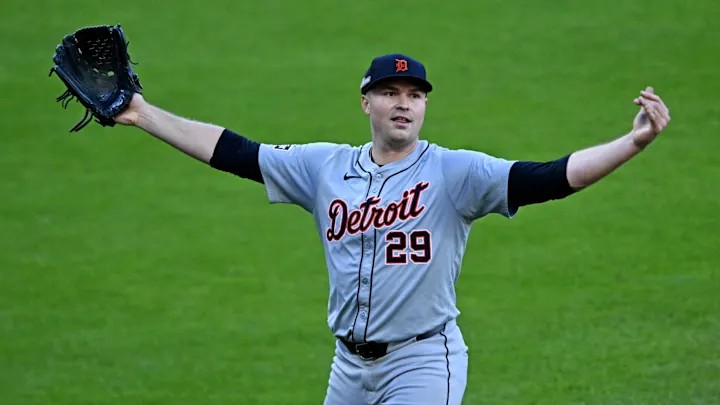

The Detroit Tigers Historic Run
 David WellsAt the time of writing, the Detroit Tigers have the chance to advance to the American League Championship Series (ALCS) tomorrow for the first time in over 10 years. This is coming after only having a 0.2% chance of making the playoffs in mid-August. I have been waiting for playoff baseball to return to Detroit for so long, and their stint in this year's playoffs has been nothing short of amazing. This team is very young, one of the youngest in baseball, but they have created many great moments within their run at the end the season and to start the playoffs. There is nothing that I cannot like about this team, and it makes it that much more special.
| Date | Playoff Chances (%) | Games Remaining |
|---|---|---|
| Aug 11 | 0.2 | 43 |
| Sept 11 | 10.7 | 16 |
| Sept 21 | 38.2 | 7 |
| Sept 27 | 100 | 2 |
My favorite part about the current Detroit Tigers is that there is not one set of players that they always have to rely on. It seems like every guy on the team has had his moment at some point during this run. A timely hit here or a strikeout there. No matter who it is, these young players are up for any challenge. However, I do have to give credit to Detroit's manager, A.J. Hinch. He has done an exceptional job putting players and the team in a position to succeed. Without his coaching, the Detroit Tigers are not currently in the American League Division Series (ALDS), or have a potential birth into the ALCS.